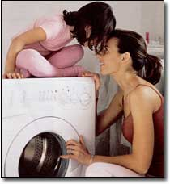
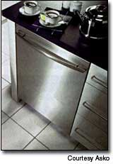
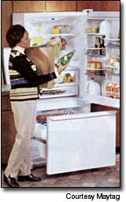
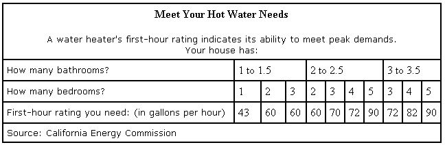
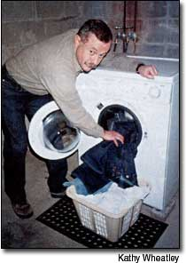

Plug into today's energy-efficient appliances and enjoy long-term savings.
Are your home appliances green? No, not that nauseating avocado tint that was popular back in the 1970s. The question is, are your appliances easy on the environment? All the talk about eco-friendly products in recent years makes sorting out the facts from the "greenwash" splashed around by some manufacturers a difficult task.
So, what is a green appliance? This term generally is used to describe any energy-efficient home appliance, especially one that has received an "Energy Star" rating (see "Spot the Energy Star," below). The more efficient the appliance, the less energy (and, in some cases, water) it will use. Lower energy consumption means less pollution from the generation of electricity. This is important because about 90 percent of U.S. electricity comes from nonrenewable sources, mainly fossil fuels and nuclear power.
Many home appliances made after 1993 are significantly more efficient than their predecessors, and some dramatic improvements have taken place in the past few years. This is especially true with major appliances such as refrigerators, clothes washers and dishwashers. For example, an average 1993 refrigerator was 99 percent more energy efficient than a similar unit produced in 1980, according to Jill Notini, director of communications for the Association of Home Appliance Manufacturers. And in 2001, in response to federal regulations, that figure jumped to 146 percent.
The downside to energy-efficient appliances is they're usually more expensive. For example, a mid-priced, vertical-axis clothes washer generally costs about $500 while a more-energy-efficient horizontal-axis machine starts at about $800 and top-of-the-line models can cost $1,600.
In many cases, however, the ultimate energy savings offset the extra initial cost, especially if a rebate is available. "As a consumer, you obviously have to be aware of price, but you also need to consider the operating costs over the life of the appliance," Notini says.
WATER HEATERS
Heating water consumes about 20 percent of the total energy used in most homes. This makes it the second largest energy use after space heating (or cooling, depending on what part of the country you live in). Consequently, you can save a significant amount of energy and money if you use less hot water to begin with, and more efficiently heat what you use.
Storage water heaters with tank sizes ranging from 20 to 80 gallons still are the most popular type of residential water heater in the United States. Although there have been some advances in storage heater designs and materials, especially in insulation, the increases in energy efficiency (about 15 percent) in the past 20 years have not been as dramatic as with other appliances. Therefore, using less hot water is one of the easiest ways to decrease your water heater's energy output and lower your bills.
One of the cheapest and easiest ways to do this is to install low-flow showerheads and faucet aerators. A 2 1/2-gallon-per-minute showerhead will reduce your water consumption by one-third to one-half. A typical bathtub holds about 60 gallons. If you want to relax, a bath is great, but if you just need to clean up, a quick shower can save up to 40 gallons. Another way to reduce hot water consumption is to wash your clothes in warm water rather than hot, or in cold water rather than warm.
The greatest inefficiency in a typical storage water heater is the heat loss between uses, generally referred to as standby loss. Lowering the heater's thermostat to 120 de grees (130 degrees if you have a dishwasher without a hot water booster) will help minimize loss, saving energy and also reducing the danger of accidental scalding.
For older heaters, wrapping the tank with an inexpensive insulating blanket may reduce standby loss. To determine if your heater needs a blanket, place the palm of your hand on the tank's exterior. If you feel noticeable warmth, you should consider using such a blanket.
If your tank is more than 12 years old, consider replacing it with a new unit (the last two digits of your heater's serial number usually represent the year of manufacture). Some utilities offer rebates on new, energy-efficient models. If you decide to buy a new tank-type water heater, find out the Energy Factor (EF) ratings to help you choose the right model.
The EF rating, based on an assumed use of 64 gallons of water per day, is the basis for the estimated annual energy consumption number found on the yellow Energy-Guide label (see example, Page 50) on new water heaters. The EF rating you should look for will vary among the different types of water heaters.
Electric water heaters have an EF rating between 0.78 and 0.96. Look for an EF of 0.91 or better. The most efficient electric water heaters have EFs between 0.94 to 0.96. Gas water heaters generally have an EF between 0.5 to 0.6; some high-efficiency models may have an EF of 0.8. Look for an EF of 0.6 or better when buying a gas model. For oil water heaters, expect to find an EF range of 0.51 to 0.68; an EF of 0.59 or better is best.
Choose a water heater with a first-hour rating that will meet your family's needs (see "Meet Your Hot Water Needs,"). The first-hour rating, listed on the unit's EnergyGuide label, indicates how many gallons of hot water a heater can supply per hour (starting with a full tank).
Avoid buying a tank that is too small or too large. An undersized tank will frequently run out of hot water; an oversized water heater is not only more expensive to purchase, it also will cost more to operate due to excessive on/off cycling and standby losses.
An alternative to a storage water heater is a tankless, or on-demand, water heater. Popular in Europe, on-demand water heaters use electricity or gas to heat water instantaneously, reducing energy consumption 20 percent to 30 percent. With no storage tank, standby loss is completely eliminated, and hot water always is available. The major drawback with on-demand heaters is limited flow rate. To ensure an ample hot water supply, correctly size and carefully place the unit.
A heat-pump water heater is another efficient way to produce hot water. Heat-pump water heaters work like refrigerators, only in reverse; they can operate at less than half the cost of a standard electric water heater. On the downside, a heat-pump water heater doesn't function well below 40 degrees, costs more for initial installation and requires more maintenance than a typical electric water heater.
REFREGIRATORS AND FREEZERS
After water heaters and air conditioners, refrigerators and freezers are the next biggest household power-gluttons. But manufacturers continue to make improvements, and have designed better compressors, condensers, evaporators and fan motors to cool more efficiently. Injected foam, which completely fills every square inch of refrigerator walls and doors, has replaced sheet insulation. What's more, models manufactured since July 2001 are 30 percent more efficient than their 1990s predecessors thanks to stringent new federal standards.
"The refrigerator has been the poster child for the improvements that have been made in residential appliance energy efficiency," says Jennifer Thorne, a research associate with the American Council for an Energy-Efficient Economy. "Many refrigerators today use only 25 percent of the electricity of similar products that were sold in the early 1970s, so in 30 years we've made tremendous gains."
In fact, it's possible to save $50 or more annually on your electric bill by purchasing a new energy-efficient model. Take time to carefully consider what type of refrigerator/freezer you need and then compare the many models that are available.
Although federal law requires minimum energy efficiency levels for refrigerators, significant differences can exist between similar models.
Refer to the EnergyGuide label and also look for the Energy Star to select the most efficient model. And keep these general guidelines in mind when you're shopping for a new refrigerator:
• Larger models use more energy than smaller models and require more raw materials to manufacture.
• Side-by-side refrigerator/freezers are less energy efficient than similarly sized models with the freezer on the top or bottom.
• Models with manual defrost use less electricity (50 percent less in some cases) than automatic defrost models but must be defrosted regularly to maintain their efficiency. Unfortunately, manual defrost models can be hard to find in larger sizes.
• Through-the-door dispensers and automatic ice makers cost more, increase energy consumption and tend to need more frequent repairs.
To keep your new refrigerator running efficiently, keep it out of direct sunlight and away from heat-producing appliances. And don't squeeze it into a tightly confined space surrounded by built-in cabinets. Your refrigerator's compressor needs room to breathe properly. Although the actual ventilation space needed varies from model to model, a good rule of thumb is to double whatever the manufacturer recommends.
Running one larger refrigerator generally is more efficient than operating two smaller ones. When you buy a new energy-efficient refrigerator, resist the temptation to move the old one into the basement or out into the garage to keep beer or soda.
"If you keep the old refrigerator, you don't get any of the savings of having bought a new one," Notini says. "I encourage people to recycle the old one." In some parts of the country, utilities or other organizations actually may come and haul your old refrigerator away for free, and perhaps even pay you for it. Check with your local utility, or call (800) YES-ICAN, to see if there is an appliance recycling program in your area.
Clothes Washers
An average clothes washer manufactured in 1999 is 51 percent more energy efficient than a similar unit made in 1981. Most of these gains are due to design improvements that use less hot water.
"Some of the new washers use about 50 percent less water than older models, and in parts of the country where water rates have gone up that can be an important factor," Thorne says. "You save money on water and water heating bills, but there also are the environmental benefits of using less water."
In fact, if you regularly do six loads of laundry a week, you can save about 6,000 gallons of water a year by switching to a horizontal-axis washing machine. Most Americans use traditional vertical-axis washing machines (typically known as toploaders), which waste lots of water and leave clothes relatively wet, requiring more drying time.
The new water-efficient, high-speed horizontal-axis washers address these issues, and can save you up to $100 a year on utility bills. At present, about 10 percent of new washers sold in the United States are horizontal-axis machines, but the number is growing. Between 2004 and 2007, the U.S. Department of Energy will gradually phase in stricter standards for energy and hot-water use as well as water extraction.
Horizontal-axis washers already meet these tougher standards, according to Consumer Reports. Unlike vertical-axis agitators and tubs, horizontal-axis washers use about a third less water, detergent and heating energy. Better yet, most horizontal-axis washers tend to have larger load capacities than their vertical-axis relatives, and generally operate more quietly.
Although many horizontal-axis washers are more expensive than conventional washers, an increasing number of utility companies now offer rebates if you buy a machine that qualifies. Contact your local utility to find out if it has an incentive program.
Even if you can't afford a new washer, you still can save energy. "With a clothes washer, virtually all of the energy savings can be realized by simply washing in cold water," says Yen Chin, planning and development specialist for Seattle City Light.
CLOTHES DRYERS
Clothes dryers are the second largest energy consumer after refrigerators. The best dryers now come with moisture sensors in the drum that shut the machine off when the clothes are dry. Compared to machines with traditional timed drying cycles, this saves energy and reduces wear and tear on your clothes from over-drying.
Gas dryers typically cost more to purchase than electric models, but are normally cheaper to operate. For the simplest and least expensive dryer of all, though, buy and use a clothesline. You'll have no electric or gas costs, and no repair bills.
EMBODIED ENERGY
Consider one final environmental factor before you replace an older appliance: embodied energy. This includes all the energy from mining the product's raw materials to its manufacturing and delivery to the consumer. Your old appliance contains a lot of embodied energy, but remember, so does its potential new replacement.
"I wish there was a simple answer to this question, but unfortunately there isn't," Chin says. "I don't have a formula for calculating embodied energy, but my gut feeling is that it's large. So, the question you have to ask when you're looking at replacing any appliance is, `How much energy am I actually going to save in making this replacement?"'
Generally speaking, if the appliance in question is at least 10 years old and shows signs of wear, the energy and money saved by replacing it with a new energy-efficient model are justified. Do your homework first; no matter what color you choose for your new appliance, if it's energy efficient, it's green.
More Energy Savings Information
For more information on the latest technologies in appliances or ways to make your existing appliances run more efficiently, call or visit the following:
American Council for an Energy Efficient Economy (ACEEE) (202) 429-8873 www.aceee.org/consumerguide/mostenef.htm Loads of up-to-date information on energy-efficient appliances, including manufacturer and model comparisons. ACEEE also publishes The Most Energy-Efficient Appliances, 2002-2003 edition, which is available for $6 postpaid.
Association of Home Appliance Manufacturers (202) 872-5955 www.aham.org A comprehensive consumer guide to the selection, use, care, service and repair of household appliances.
California Energy Commission Consumer Energy Centerwww.consumerenergycenter.org Link to "choices at home & work," then select "homes," then "appliances" for extensive coverage of appliances and related subjects.
Consolidated Edisonwww.coned.com/customer/ Check out the Appliance Guide to compare energy consumption of most household appliances. You may be surprised at what you learn.
Consumer Reports Onlinewww.consumerreports.org Select "appliances" to find a wealth of information on refrigerators, freezers, dishwashers and much more.
Energies Programoee.nrcan.gc.ca/energuidelhome.cfm Canada's Office of Energy Efficiency has information on buying green appliances and reducing energy bills.
ENERGYguide.comwww.energyguide.com Locate retailers of energy-efficient appliances in your area.
Energy Star Program (888) STAR YES www.energystar.gov Background on and description of the Energy Star program.
U.S. Department of Energy Office of Energy Efficiency and Renewable Energy (800) 363-3732 www.eere.energy.gov/EE/buildings_appliances.html This site offers useful information and tips on energy-efficient appliances and Energy Guide labels.
Spot the Energy Star
Energy Star is a voluntary labeling program introduced in 1992 by the Environmental Protection Agency and designed to identify and promote to the public energy-efficient products with the aim of reducing greenhouse gas emissions.
Today, through a partnership with more than 7,000 private and public sector organizations, Energy Star offers technical information and tools that can be used to choose a wide range of energy-efficient products. Energy Star provides a trusted label on more than 30 product categories (and thousands of models) for homes and offices. Energy Star labels now can be found on major appliances, office equipment, lighting, consumer electronics, and even on new homes, and commercial and industrial buildings.
"It's like the Good Housekeeping Seal of Approval for energy consumption," says Ed Wizniewski, deputy director for programs with the Consortium for Energy Efficiency. "It's an easy way for consumers to identify top-performing products in the marketplace." The EPA estimates that more than 630 million Energy Star-rated products have been sold to date, resulting in energy savings of $5 billion per year for businesses, organizations and consumers. For more information, call (888) STAR-YES or go to www.energystar.gov.
Mother Earth News
|
 This Energy Star-certified ASKO dishwasher is 84 percent more energy efficient than the minimum federal standards. |
 Refrigerators with a freezer on the bottom tend to be more efficient than side-by-side models. |
 Author Greg Pahl gets his dirtiest duds squeaky clean, and saves energy and water, with his horizontal-axis washer. These washers also use less detergent and are more gentle to fabric. |
|
 |
 |
|